Adds one extra text line per element to a plot created with [ggPSE()]
(or any function built on it), taking the text from a column of your data.
It replaces the usual workaround of merging the element positions into your
data and placing a geom_text() by hand. Call it several times to
stack more lines, for example a classification at the "center" and a
value at the "bottom".
Usage
ggPSE_text(
plot = NULL,
data,
text_col,
symbol_col = "symbol",
position = c("bottom", "top", "center"),
position_nudge = 0,
size = 2.5,
fontface = "plain",
color = "grey15",
lineheight = 0.9
)Arguments
- plot
A plot created with [ggPSE()]. If
NULL, a blank periodic table is used.- data
A data frame with the element symbols and the text column.
- text_col
Character. Column in
datawith the text to draw. It is converted withas.character(), so format numbers beforehand (e.g. withsprintf()).- symbol_col
Character. Column in
datawith the element symbols. Default"symbol".- position
Where in the tile the text is anchored:
"bottom"(default),"top"or"center".- position_nudge
Numeric. Vertical shift in tile units (positive = up) added to
position, to fine-tune the placement. A tile is 0.92 high. Default0. (Unlikeggplot2::position_nudge()this is a single vertical value.)- size
Numeric. Text size in ggplot2 text units (mm). Default
2.5.- fontface
Character.
"plain"(default),"bold","italic"or"bold.italic".- color
Either a single colour (default
"grey15") or the name of a column indatathat holds one colour per element.- lineheight
Numeric. Line spacing for multi-line text. Default
0.9.
Details
The text is anchored at the chosen edge of the tile and grows into the tile,
so multi-line text ("\n") stays inside it. Elements that are not in
data, or whose text is NA or empty, get no text. Elements in
data that are not part of the plot (e.g. outside a periods
subset) are ignored.
Note
[ggPSE_donut()] removes every text layer from the plot it receives.
Call ggPSE_text() after the donut.
Examples
data(ggpse_elements)
d <- data.frame(
symbol = c("Li", "Na", "K", "Fe", "Cu"),
E = c(-3.04, -2.71, -2.92, -0.41, 0.34),
eq = c("Li\u207a+e\u207b\u2192Li", "Na\u207a+e\u207b\u2192Na",
"K\u207a+e\u207b\u2192K", "Fe\u00b2\u207a+2e\u207b\u2192Fe",
"Cu\u00b2\u207a+2e\u207b\u2192Cu")
)
d$E_label <- sprintf("%+.2f", d$E)
p <- ggPSE(d, value_col = "E", label_value = FALSE, label_na = FALSE,
symbol_position = "center", periods = c(1, 4),
lanthanides = FALSE, actinides = FALSE)
p <- ggPSE_text(p, d, "E_label", position = "top", fontface = "bold")
ggPSE_text(p, d, "eq", position = "bottom", size = 2)
